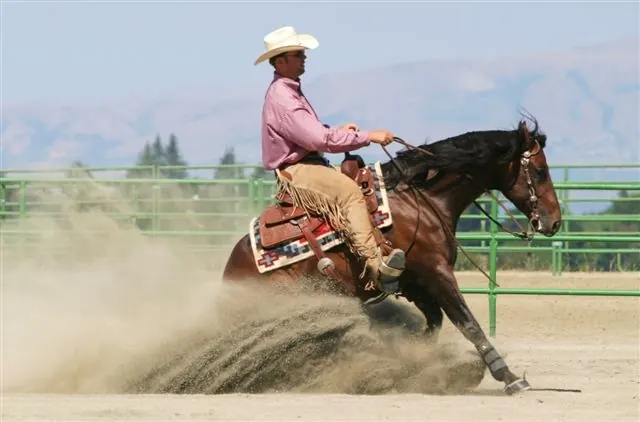
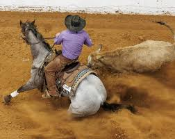
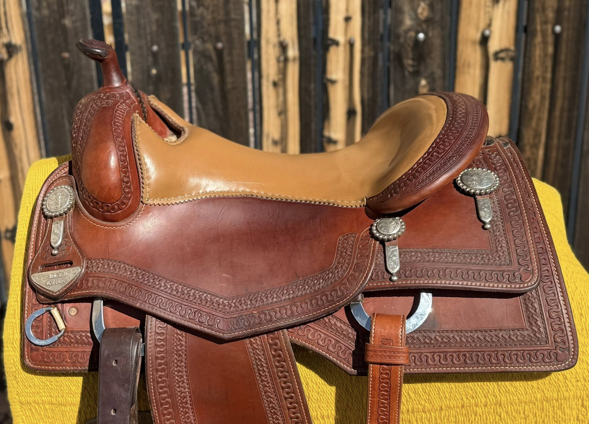

The leading online resource for reined cow horse saddles — sponsored by Superior Saddlery and Certified Used Saddles. View their inventory here online.
What Makes It Different
NRCHA competition demands that horse and rider excel in reining, fence work, and cow work — often on the same day. The cow horse saddle is engineered to support all three without compromise.

Spins, lead changes, rundowns, and sliding stops require the same flat-seated, close-contact geometry as a dedicated reining saddle. The cow horse build doesn't sacrifice that feel.

Boxing a cow and working the fence puts lateral and forward forces on the saddle that reining never encounters. A slightly more forward balance point and stronger rigging position handle that demand.

Where the reining saddle is specialized to perfection, the cow horse saddle is engineered for versatility. It must not lock the rider in for patterns, yet must brace them for cattle.
Key Differences at a Glance
| Feature | Cow Horse Saddle | Reining Saddle |
|---|---|---|
| Seat Balance | Slightly forward — supports cow work movement | Neutral to behind — optimized for quiet pattern riding |
| Skirt Shape | Semi-round to slightly square, more back coverage | Round or semi-round, trimmed short for hip freedom |
| Rigging | 7/8 to full — more forward for cattle pressure | 7/8 in-skirt most common — low profile |
| Horn | Slightly taller/stronger — breast collar use common | Short, thin, minimal — no cattle work required |
| Fender Width | Moderate — absorbs lateral cow work forces | Narrow — maximum leg feel for patterns |
| Overall Build | Heavier, more versatile construction | Lighter, specialized for pattern precision |
| Tree Width | Full to semi-quarter horse — QH-bred athletes | Semi-quarter to full quarter horse |
New Saddles
Andreas Maschke's Superior Saddlery builds purpose-designed cow horse and cowhorse/reiner crossover saddles used by NRCHA competitors at every level. Hand-crafted in the USA with glass-encased wood SYMMETREES™ trees.


Certified Used Inventory
David Solum brings 40+ years of reining and cow horse saddle expertise to a curated pre-owned inventory. Every saddle is personally inspected — tree integrity verified, leather condition documented.


Contact a Specialist
David Solum has spent decades in NRCHA and reining circles. He knows which saddles cross over, which don't, and what to look for at every price point.